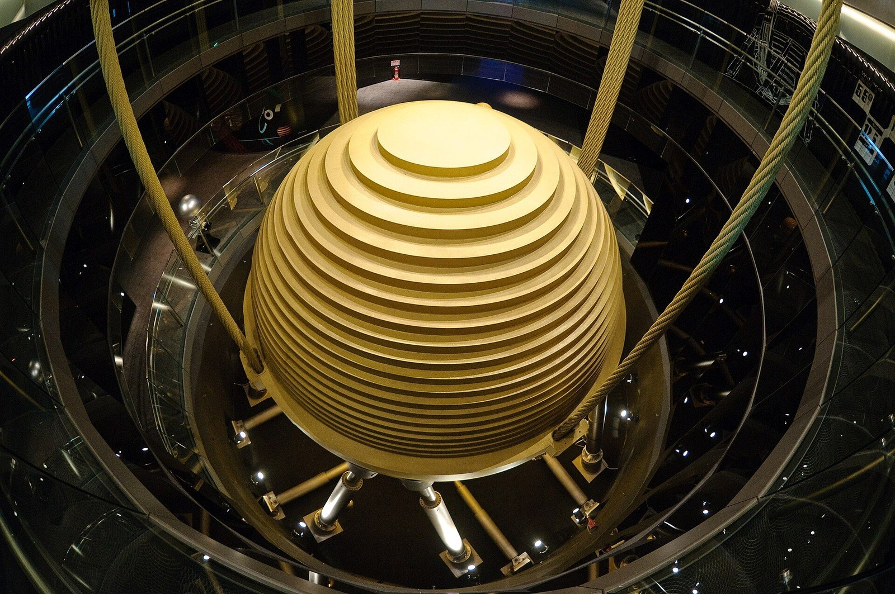

第29回
倒しても起き上がる、赤い張り子の人形である。
Daderot（2018年、石川県立伝統産業工芸館の起き上がり小法師）／CC0／Wikimedia Commons（横長に切り出した）
ばねにつながれた物体の運動、電気回路の電流の振る舞い、建物の揺れ。まったく違う場面が、同じ形の式 $m\ddot x+c\dot x+kx=0$ で書ける。この回では、その式の解を3つの手順だけで全部求める。①「$e^{\lambda t}$ の形のものを代入してみる」と、$\lambda$ の2次方程式（特性方程式）になる。②解を足したり定数倍したりしても解のままである（重ね合わせ）。③2次方程式の根が「異なる2つの実数」「重根」「複素数」のどれかで、解の形が決まる。最後に、ばねの強さや重さに左右されない標準形 $\ddot x+2\zeta\omega_n\dot x+\omega_n^2x=0$ に書き直し、$\zeta$（減衰比）ひとつで振る舞いが分類できることを見る。
第1回から続く約束どおり、新しい記号は緑色の枠（記号）で「①読み方 ②日本語での意味 ③省略していない書き方 ④どこで出会うか」を書く。この回で省略が起きるのは、主に3か所：(a) $e^{\lambda t}$ を代入するときの式の変形、(b) 複素数の根を実数の解に直す手順、(c) 標準形に書き直すときの文字の置き換え。それぞれ「省略の段階」の箱を置くので、迷ったらそこへ戻る。
各節は、「なぜ必要か → 定義 → 数値で一度手を動かす → 導出 → 確かめ → よくある誤解」の順に進む。高校・1年で習った内容（2次方程式の解の公式、指数関数の微分）も、短く一度は書く。覚えている部分は飛ばしてよい。
前提：第28回（微分方程式とは・1階）。微分方程式・解・一般解・初期条件の意味はそこで説明した。この回の最初にも、必要な部分だけ言い直す。複素数は、第34回（複素数とオイラーの公式）で詳しく扱う予定だが、この回で必要な部分だけを 6.1 に書く。
最初に、この回で新しく説明する記号と、前の回で説明済みの記号を分けて並べる。右の列の「→」で説明のある場所へ飛べる。
| 記号 | 読み方 | ざっくりした意味 | 説明 |
|---|---|---|---|
| 2階線形定数係数同次の微分方程式 $m\ddot x+c\dot x+kx=0$ | エム・エックス・ツードット … | 2階まで微分した形が、定数倍の和で、右辺が $0$ の方程式 | →1.2 |
| 特性方程式 $m\lambda^2+c\lambda+k=0$ | とくせいほうていしき | $e^{\lambda t}$ を代入して出る、$\lambda$ についての2次方程式 | →2.2 |
| $\lambda_1,\ \lambda_2$（特性根） | ラムダ・イチ、ラムダ・ニ | 特性方程式の2つの根 | →2.3 |
| 初期条件 $x(0)=x_0,\ \dot x(0)=v_0$、一般解、特殊解 | エックス・ゼロ、ブイ・ゼロ | 時刻 $0$ での位置と速度、定数を含む解、定数を決めた解 | →3.3 |
| 重ね合わせ | かさねあわせ | 解の定数倍と和も解になること | →3.1 |
| 複素数 $a+bi$、実部、虚部、共役 | ― | 2乗して $-1$ になる $i$ を使った数（最小限の説明） | →6.1 |
| $e^{i\theta}:=\cos\theta+i\sin\theta$ | イー・アイ・シータ | この回で使う「約束」。第34回で、約束ではなく定理になる | →6.2 |
| $R,\ \varphi$（振幅・位相） | アール、ファイ | $A\cos+B\sin$ を1つの $\cos$ にしたときの大きさとずれ | →6.5 |
| $\omega_n$（固有角周波数） | オメガ・エヌ | 減衰がないときの、振動の速さ（rad/s） | →7.2 |
| $\zeta$（減衰比） | ゼータ | 減衰の強さを、振動を止める限界の強さの何倍かで表した数 | →7.3 |
| $\omega_d$（減衰固有角周波数） | オメガ・ディー | 減衰があるときの、振動の速さ | →7.4 |
| 標準形への書き換えの省略の段階（S0〜S2） | ― | $m\ddot x+c\dot x+kx=0$ から $\ddot x+2\zeta\omega_n\dot x+\omega_n^2x=0$ まで | →7.1 |
| 記号 | 意味 | 初出 |
|---|---|---|
| $:=$、$=$ | 左の名前を右の式で決める／等しい | 第1回 2.2、2.1 |
| $e^{x}$、$\exp$ | 指数関数（自然対数の底 $e$ の累乗） | 第3回 |
| 導関数 $f'$、$\dfrac{dy}{dx}$、$\dot x$、$\ddot x$ | 微分したもの。ドットは時間 $t$ での微分 | 第7回 2.3、2.2、2.4 |
| 微分の規則（定数倍・和・連鎖律）、$(e^{x})'=e^x$ | 微分の計算規則 | 第7回 3.2、3.4、3.7 |
| テイラー展開（マクローリン展開） | 関数を冪の和で書く | 第9回 4.0 |
| 線形結合、線形独立 | 定数倍して足したもの、どれも他の定数倍の和にならない | 第15回、4.2 |
| 連立一次方程式、行列式 | 2本の1次式の連立、正方行列の値 $\det$ | 第17回、第18回 |
| 特性多項式、固有値、虚数単位 $i$ | $\det(A-\lambda I)$、$A\boldsymbol v=\lambda\boldsymbol v$ の $\lambda$、2乗すると $-1$ の数 | 第20回、1.2、3.3 |
| 微分方程式、解、一般解、初期値問題、$C$ | 未知の関数を含む等式、それを満たす関数、定数を含む解、初期条件つきの問題 | 第28回 1.2、2.1、2.4、2.4 |
第28回では、$\dot y=-ay$（変化の速さが今の量に比例する）の形の方程式を解いた。冷めていくコーヒー、放射性物質の減り方などがこの型で、解は $y=Ce^{-at}$ だった（C は初期値で決まる定数）。
ところが、ばねにつないだおもりを引いて放すと、おもりは行ったり来たりする。$y=Ce^{-at}$ は、単調に減るだけで、行って戻る動きを表せない。原因は、運動の法則が加速度（位置の2階微分）を含むからである。
ニュートンの運動方程式は「質量 $\times$ 加速度 $=$ 力」である。位置を $x(t)$ とすると、加速度は $\ddot x$（ドット2つ：時間で2回微分）なので、
$$ m\ddot x=F $$
となる。右辺の力 $F$ が $x$ と $\dot x$ で決まるとき、これは位置 $x$、速度 $\dot x$、加速度 $\ddot x$ を結ぶ方程式になる。微分が最大2回出てくるので「2階」の微分方程式という。
図1.1 のような装置を考える。おもり（質量 $m$）が、ばねとダンパー（ショックアブソーバー：油の中でピストンが動くので、速さに比例する抵抗を出す部品）で壁につながれ、なめらかな床の上を左右に動く。位置 $x$ は、ばねが自然の長さのときのおもりの位置（つりあいの位置）から測る。右向きを正とする。
おもりにはたらく力は2つである。
運動方程式 $m\ddot x=F$ の $F$ に2つの力を代入する。
① $m\ddot x=-kx-c\dot x$
② $m\ddot x+c\dot x+kx=0$
図1.1 を見る。ばねとダンパーでおもりを壁につないだ装置。
①読み方：「エム・エックス・ツードット・プラス・シー・エックス・ドット・プラス・ケー・エックス・イコール・ゼロ」。名前は「にかいせんけいていすうけいすうどうじ（の）びぶんほうていしき」。
②日本語での意味：未知の関数 $x(t)$ と、その1階微分・2階微分をそれぞれ定数倍して足したものが、いつでも $0$ に等しい、という条件。名前の各語は次のとおり。
③省略していない書き方：未知の関数が時刻 $t$ の関数であることまで書くと、
$$ m\,\frac{d^2x}{dt^2}(t)\ +\ c\,\frac{dx}{dt}(t)\ +\ k\,x(t)\ =\ 0\qquad(\text{すべての時刻 }t\text{ について}) $$
「すべての時刻 $t$ について成り立つ」ことまで含めて、この式は「$t$ の関数 $x$ への条件」である（この条件を満たす関数が解。第28回）。
④どこで出会うか：機械振動（ばね・質量・減衰）、電気回路（RLC 回路：コイル・抵抗・コンデンサ）、自動車のサスペンション、建物の耐震、制御工学。
文字の約束：$m>0$、$c\ge0$、$k>0$ とする（質量は正、減衰と剛性は負にならない）。係数が全部実数であることが、6 章で重要になる。$\dot x$ と $\ddot x$ は、数学の本では $x'$、$x''$ とも書く（第7回 2.3）。意味は同じで、ドットが時間 $t$ での微分に限るだけである。
1階の $\dot y=-ay$ の解 $Ce^{-at}$ を思い出す。指数関数は、微分すると自分自身の定数倍になる。$y=e^{-at}$ なら $\dot y=-a\,e^{-at}$、さらに $\ddot y=(-a)^2e^{-at}$。何回微分しても、形は $e^{-at}$ のまま、前に定数が付くだけである。
2階の方程式 $m\ddot x+c\dot x+kx=0$ は、$x,\dot x,\ddot x$ の定数倍の和が $0$ になる、という式である。そこで、「3つとも同じ形の関数で、定数倍だけが違う」ような $x$ を探せば、この式が成り立つ可能性が出てくる。それが指数関数 $e^{\lambda t}$（$\lambda$ は定数）である。
数値で見る。$\lambda=-\tfrac12$ として $x=e^{-t/2}$ を、$\dot x$、$\ddot x$ と並べる。
① $x=e^{-t/2}$
② $\dot x=-\tfrac12e^{-t/2}$
③ $\ddot x=\left(-\tfrac12\right)^2e^{-t/2}=\tfrac14e^{-t/2}$
図1.2 を見る。$e^{-t/2}$ とその1階微分・2階微分を並べる。
3本の曲線は、同じ形を縦に $1$ 倍、$-\tfrac12$ 倍、$\tfrac14$ 倍しただけである。だから、3本を定数倍して足し合わせたとき、形が残らず消えるようにできる。つまり $m\ddot x+c\dot x+kx$ が、「$e^{-t/2}$ に、ある数を掛けたもの」になる。その数が $0$ になるように $\lambda$ を選べばよい。次の節でそのとおり実行する。
「$e^{\lambda t}$ を試してみる」は、勘ではなく、形を決め打ちして調べる方法である。うまくいくかは、実際に代入してみれば分かる。さらに 3 章で、「解は必ず2つの定数を含み、$e^{\lambda t}$ の形（とその仲間）だけで全部まかなえる」ことを、後から確かめる。したがって、答えの取りこぼしはない。
$x(t)=e^{\lambda t}$ とおく。$\lambda$ は、これから決める定数である。
① $x=e^{\lambda t}$
② $\dot x=\lambda e^{\lambda t}$
③ $\ddot x=\lambda\cdot\lambda e^{\lambda t}=\lambda^2e^{\lambda t}$
④ $m\ddot x+c\dot x+kx=m\lambda^2e^{\lambda t}+c\lambda e^{\lambda t}+ke^{\lambda t}$
⑤ $\qquad\qquad=(m\lambda^2+c\lambda+k)\,e^{\lambda t}$
⑥ これが $0$ になる条件：$(m\lambda^2+c\lambda+k)\,e^{\lambda t}=0$。
⑦ $e^{\lambda t}$ はいつでも正の数（指数関数は決して $0$ にならない。第3回）なので、$e^{\lambda t}$ で両辺を割ってよい。$0$ になるのは、掛かっている括弧の中が $0$ のときだけである。
⑧ よって $m\lambda^2+c\lambda+k=0$。
図2.1 を見る。$e^{\lambda t}$ を代入してから特性方程式が出るまで。
①読み方：「とくせいほうていしき」。「エム・ラムダ・にじょう・プラス・シー・ラムダ・プラス・ケー・イコール・ゼロ」。
②日本語での意味：微分方程式 $m\ddot x+c\dot x+kx=0$ の「$\ddot x$ を $\lambda^2$ に、$\dot x$ を $\lambda$ に、$x$ を $1$ に置き換えた」代数方程式。この方程式を満たす $\lambda$ に対して、$e^{\lambda t}$ が微分方程式の解になる。
③省略していない書き方：「関数 $x=e^{\lambda t}$ が、すべての $t$ で $m\ddot x+c\dot x+kx=0$ を満たす」と「数 $\lambda$ が $m\lambda^2+c\lambda+k=0$ を満たす」は同じ意味である（2.1 の⑥⑦⑧を、逆向きにも読める）。これを記号で書くと
$$ \bigl[\ \forall t:\ m\,\tfrac{d^2}{dt^2}e^{\lambda t}+c\,\tfrac{d}{dt}e^{\lambda t}+k\,e^{\lambda t}=0\ \bigr]\ \Longleftrightarrow\ \bigl[\ m\lambda^2+c\lambda+k=0\ \bigr] $$
（$\forall t$ は「すべての $t$ について」、$\Longleftrightarrow$ は「同値」）。
④どこで出会うか：2階以上の定数係数線形微分方程式すべて。第31回では、連立の微分方程式の「固有値」と同じものとして再会する（第20回の特性多項式と同じ名前なのは、そのため）。
高校の復習：$a\lambda^2+b\lambda+c'=0$ の根は $\lambda=\dfrac{-b\pm\sqrt{b^2-4ac'}}{2a}$。いまの文字では $a=m$、$b=c$、$c'=k$ なので
$$ \lambda=\frac{-c\pm\sqrt{c^2-4mk}}{2m} $$
（$\pm$ は「$+$ の場合と $-$ の場合の2つ」）。ルートの中身 $D:=c^2-4mk$ を判別式と呼ぶ。
①読み方：「ラムダ・イチ」「ラムダ・ニ」。ギリシャ文字 $\lambda$ は「ラムダ」（第1回）。
②日本語での意味：特性方程式の2つの根（解）。足し算で言えば、「プラスの場合」の $\lambda_1$ と「マイナスの場合」の $\lambda_2$。
③省略していない書き方：
$$ \lambda_1:=\frac{-c+\sqrt{c^2-4mk}}{2m},\qquad \lambda_2:=\frac{-c-\sqrt{c^2-4mk}}{2m} $$
添字 $1,2$ は番号で、冪ではない（第1回の添字）。
④どこで出会うか：2階の微分方程式、振動、制御工学（極）。第32回で、これらの実部の符号が安定性を決める。
判別式 $D=c^2-4mk$ の符号で、根の姿が3通りに分かれる。
| 判別式 | 根 | $e^{\lambda t}$ の形で得られる解 | この回の説明 |
|---|---|---|---|
| $D>0$ | 異なる2つの実数 $\lambda_1\ne\lambda_2$ | $e^{\lambda_1t},\ e^{\lambda_2t}$（2つ） | 4 章 |
| $D=0$ | 重根 $\lambda_1=\lambda_2=-\dfrac{c}{2m}$ | $e^{\lambda_1t}$ （1つだけ） | 5 章 |
| $D<0$ | 虚数を含む複素数の根（互いに共役） | 複素数の値をとる解2つ | 6 章 |
図2.2 を見る。特性方程式の左辺 $p(\lambda)=m\lambda^2+c\lambda+k$ のグラフと、$\lambda$ 軸との交わり。
$m=1$、$c=3$、$k=2$ の場合。
① 特性方程式：$\lambda^2+3\lambda+2=0$。
② 因数分解：$(\lambda+1)(\lambda+2)=0$。
③ 根：$\lambda_1=-1$、$\lambda_2=-2$。
④ 確かめ（$x=e^{-t}$）：$\dot x=-e^{-t}$、$\ddot x=e^{-t}$。$\ddot x+3\dot x+2x=e^{-t}-3e^{-t}+2e^{-t}=(1-3+2)e^{-t}=0$。成り立つ。
⑤ 確かめ（$x=e^{-2t}$）：$\dot x=-2e^{-2t}$、$\ddot x=4e^{-2t}$。$4e^{-2t}-6e^{-2t}+2e^{-2t}=(4-6+2)e^{-2t}=0$。成り立つ。
解が2つ見つかった。次の章で、これらを組み合わせて「すべての解」にする。
誤解1：「$\lambda$ は、$t$ の関数でもよい」。ここでは $\lambda$ は定数と決めて、$\dot x=\lambda e^{\lambda t}$ とした。$\lambda$ が $t$ とともに変わるなら、連鎖律で $t$ の微分が余分に出て、②が成り立たない。
誤解2：「$e^{\lambda t}$ で割ってはいけない（$0$ かもしれない）」。$e^{\lambda t}$ は実数 $\lambda$ に対していつでも正である。割ってよい。複素数の $\lambda$ でも、$e^{\lambda t}$ は $0$ にならない（6 章）。
誤解3：「特性方程式の $\lambda^2$ は $t$ の2乗」。$\lambda$ は $e^{\lambda t}$ の肩の係数であって、$t$ ではない。微分方程式の「階」が、特性方程式の「次数」に変わっただけである。
動機：特性方程式から、解が1つ（または2つ）見つかった。しかし、おもりの運動は初期の位置と速度で変わる。それぞれの場合に合う解を作るには、見つかった解を組み合わせる必要がある。
$x_1(t)$ と $x_2(t)$ が $m\ddot x+c\dot x+kx=0$ の解ならば、任意の定数 $c_1,c_2$ に対して、$x(t)=c_1x_1(t)+c_2x_2(t)$ も解である。
言い直し：解の線形結合は、解である。（ここで「線形結合」は、定数倍して足したもの。）定数の文字が $c$（減衰係数）と紛らわしいので、この回では解の係数を $c_1,c_2$ と添字つきで書き、減衰係数は添字なしの $c$ と書く。
証明：仮定は $m\ddot x_1+c\dot x_1+kx_1=0$（…ア）と $m\ddot x_2+c\dot x_2+kx_2=0$（…イ）。$x=c_1x_1+c_2x_2$ を左辺に代入する。
① $\dot x=c_1\dot x_1+c_2\dot x_2$、$\ddot x=c_1\ddot x_1+c_2\ddot x_2$
② $m\ddot x+c\dot x+kx=m(c_1\ddot x_1+c_2\ddot x_2)+c(c_1\dot x_1+c_2\dot x_2)+k(c_1x_1+c_2x_2)$
③ $\qquad=c_1\bigl(m\ddot x_1+c\dot x_1+kx_1\bigr)+c_2\bigl(m\ddot x_2+c\dot x_2+kx_2\bigr)$
④ $\qquad=c_1\cdot0+c_2\cdot0=0$
よって $x$ も解である。∎
図3.1 を見る。2つの解を定数倍して足すと、別の解ができる。
どの性質が効いたか：方程式が線形（$x,\dot x,\ddot x$ の1次式）で、同次（右辺が $0$）だからである。$x^2$ が入っていれば③のくくり出しができず、右辺が $0$ でなければ④で $c_1\cdot(\text{右辺})+c_2\cdot(\text{右辺})$ が残り、$0$ にならない。重ね合わせは、線形・同次という条件がそろったときだけ使える。
1階の方程式 $\dot y=-ay$ の解 $Ce^{-at}$ は、定数 $C$ が1つで、初期値 $y(0)$ を1つ与えると決まった。2階の方程式では、おもりを同じ位置から放しても、初めの速さが違えば運動が違う。決めるべきものは、位置と速度の2つである。したがって、解には自由に選べる定数が2つ必要になる。
①読み方：「エックス・ゼロ」「ブイ・ゼロ」。$x_0$ ははじめの位置、$v_0$ ははじめの速度（velocity の頭文字）。
②日本語での意味：初期条件は、時刻 $t=0$ でのおもりの位置と速度を指定すること。微分方程式と初期条件を一緒にして解く問題を初期値問題という。解のうち、定数 $c_1,c_2$ を含んだままの形を一般解、初期条件で定数の値を決めたものを特殊解（特解ともいう。第30回の「特解」は別の意味なので、混同しない）という。
③省略していない書き方：
$$ x(0)=x_0\quad(\text{時刻 }t=0\text{ での位置が }x_0),\qquad \dot x(0)=v_0\quad\Bigl(\text{時刻 }t=0\text{ での }\frac{dx}{dt}\text{ の値が }v_0\Bigr) $$
$\dot x(0)$ は「$\dot x$ という関数に $t=0$ を代入した値」で、「$x(0)$ を微分したもの」（これは定数の微分なので $0$ になってしまう）ではない。括弧の位置に気をつける。
④どこで出会うか：すべての微分方程式の問題。第28回の $y(0)=y_0$ の2階版。
定理を1つ、認めて使う。
$m\ddot x+c\dot x+kx=0$ の解で、$x(0)=x_0$、$\dot x(0)=v_0$ を満たすものはただ1つしかない。（標準的な定理で、証明にはこの教材の範囲を超える議論が要る。Lebl の教科書の第2章に述べられている。本教材では証明せず、認めて使う。）
この定理があると、次のことが言える。「$x_0,v_0$ を任意に与えても、それに合う定数 $c_1,c_2$ が見つかる形」を作れば、それがすべての解を尽くしている。なぜなら、どんな解 $x$ も、その $x_0=x(0)$、$v_0=\dot x(0)$ を持ち、見つけた形がその初期条件を満たす解を作るなら、一意性により、$x$ はその解と一致するからである。これで 1.4 の疑問（取りこぼしはないか）に答える準備ができた。
2.4 で、$e^{-t}$ と $e^{-2t}$ が解と分かった。重ね合わせにより、一般解は
$$ x(t)=c_1e^{-t}+c_2e^{-2t} $$
初期条件で $c_1,c_2$ を決める。
① 位置：$x(0)=c_1e^{0}+c_2e^{0}=c_1+c_2$。これが $1$ だから $c_1+c_2=1$。
② 速度：$\dot x=-c_1e^{-t}-2c_2e^{-2t}$。$\dot x(0)=-c_1-2c_2$。これが $0$ だから $-c_1-2c_2=0$。
③ ②より $c_1=-2c_2$。
④ ①に③を代入：$-2c_2+c_2=1$、$-c_2=1$、$c_2=-1$。
⑤ $c_1=-2c_2=2$。
⑥ よって $x(t)=2e^{-t}-e^{-2t}$。
⑦ 確かめ：$x(0)=2-1=1$ ✓。$\dot x(0)=-2\cdot1+2\cdot1=0$ ✓（$\dot x=-2e^{-t}+2e^{-2t}$）。$\ddot x+3\dot x+2x$ は、重ね合わせの証明により $0$。
$t=1$ での値：$x(1)=2e^{-1}-e^{-2}=0.7358-0.1353=0.6005$。放したおもりは、ゆっくり原点へ戻る。
初期条件を変える。位置はそのまま $x(0)=1$ で、初めの速度を $\dot x(0)=v_0$ とすると、連立方程式 $c_1+c_2=1$、$-c_1-2c_2=v_0$ になる。①＋②（辺々を足す）で $-c_2=1+v_0$、$c_2=-1-v_0$、$c_1=1-c_2=2+v_0$。解は
$$ x(t)=(2+v_0)\,e^{-t}-(1+v_0)\,e^{-2t} $$
$v_0=0$ なら上の解、$v_0=-3$（内向きに強く押し出す）なら $x=-e^{-t}+2e^{-2t}$。同じ位置から出発しても、速度が違えば別の運動になる（図3.2）。
図3.2 を見る。同じ位置 $x(0)=1$ から、初めの速度だけを変えた4つの解。
$\lambda_1\ne\lambda_2$ のとき、一般解 $x=c_1e^{\lambda_1t}+c_2e^{\lambda_2t}$ に初期条件を入れると、
$$ \begin{cases} c_1+c_2=x_0 & (x(0)\text{ から})\\ \lambda_1c_1+\lambda_2c_2=v_0 & (\dot x(0)\text{ から}) \end{cases} $$
これは $c_1,c_2$ の連立一次方程式で、係数行列は $\begin{pmatrix}1&1\\\lambda_1&\lambda_2\end{pmatrix}$、その行列式は $1\cdot\lambda_2-1\cdot\lambda_1=\lambda_2-\lambda_1$ である。$\lambda_1\ne\lambda_2$ なら行列式は $0$ でないので、連立方程式はただ1つの解をもつ。実際に解くと
$$ c_1=\frac{\lambda_2x_0-v_0}{\lambda_2-\lambda_1},\qquad c_2=\frac{v_0-\lambda_1x_0}{\lambda_2-\lambda_1} $$
確かめ：$c_1+c_2=\dfrac{\lambda_2x_0-v_0+v_0-\lambda_1x_0}{\lambda_2-\lambda_1}=\dfrac{(\lambda_2-\lambda_1)x_0}{\lambda_2-\lambda_1}=x_0$ ✓。$\lambda_1c_1+\lambda_2c_2=\dfrac{\lambda_1\lambda_2x_0-\lambda_1v_0+\lambda_2v_0-\lambda_1\lambda_2x_0}{\lambda_2-\lambda_1}=\dfrac{(\lambda_2-\lambda_1)v_0}{\lambda_2-\lambda_1}=v_0$ ✓。数値 $\lambda_1=-1,\lambda_2=-2,x_0=1,v_0=0$：$c_1=\dfrac{-2-0}{-2+1}=2$、$c_2=\dfrac{0+1}{-2+1}=-1$。3.4 と一致する。
この「行列式が $0$ でない」ことは、$e^{\lambda_1t}$ と $e^{\lambda_2t}$ が線形独立（一方が他方の定数倍にならない）ことに対応している。$\lambda_1=\lambda_2$ になると行列式は $0$ になり、定数を決められなくなる。この場合が 5 章である。
誤解1：「$c_1e^{\lambda_1t}$ と $c_2e^{\lambda_2t}$ の積も解になる」。重ね合わせで許されるのは「定数倍」と「和」だけで、積ではない（方程式が線形でなくなる）。実際、$e^{-t}\cdot e^{-2t}=e^{-3t}$ は $\ddot x+3\dot x+2x$ に代入すると $9-9+2=2\ne0$ で、解ではない。
誤解2：「初期条件は位置だけでよい」。2階の方程式では、位置と速度の両方が必要である（図3.2）。
誤解3：「$\dot x(0)$ は、$x(0)=x_0$ を微分したものだから $0$」。$\dot x(0)$ は、関数 $\dot x$ に $t=0$ を入れた値で、一般に $0$ ではない。
$D=c^2-4mk>0$ のとき、$\lambda_1\ne\lambda_2$ はどちらも実数で、
$$ x(t)=c_1e^{\lambda_1t}+c_2e^{\lambda_2t}\qquad(c_1,c_2\text{ は 3.5 の式で決まる}) $$
が一般解である（3.5 で、どんな初期条件にも合わせられると確かめた）。この場合、減衰が強すぎて振動できない状態を過減衰という。
根の符号を調べる。根と係数の関係（2次方程式で、2根の和は $-\dfrac cm$、積は $\dfrac km$。高校数学）により、$\lambda_1+\lambda_2=-\dfrac cm<0$、$\lambda_1\lambda_2=\dfrac km>0$。積が正だから2根は同符号、和が負だから2根とも負。すなわち、$e^{\lambda_1t}$ も $e^{\lambda_2t}$ も $t\to\infty$ で $0$ に近づく。
数値例は 2.4・3.4 で済ませた（$\lambda=-1,-2$）。
$x=c_1e^{\lambda_1t}+c_2e^{\lambda_2t}$ が $0$ になる時刻を探す。
① $c_1e^{\lambda_1t}+c_2e^{\lambda_2t}=0$
② $c_1e^{\lambda_1t}=-c_2e^{\lambda_2t}$
③ $e^{(\lambda_1-\lambda_2)t}=-\dfrac{c_2}{c_1}$
④ 左辺 $e^{(\lambda_1-\lambda_2)t}$ は、$\lambda_1\ne\lambda_2$ なので $t$ について単調（増え続けるか減り続ける）。単調な関数は、同じ値を2回とらない。したがって③を満たす $t$ は高々1つ。
⑤ 結論：過減衰では、おもりは原点を高々1回通り過ぎるだけで、行ったり来たりしない。
3.4 の例では $v_0=-3$ のとき、$x=-e^{-t}+2e^{-2t}$ が $e^{-t}=\tfrac12$、すなわち $t=\ln2\approx0.693$ で一度だけ $0$ を横切る。$v_0=0$ では横切らない。
もう一つの特徴：$t$ が大きくなると、$\lambda_1=-1$ と $\lambda_2=-2$ のうち、絶対値の小さいほう（$-1$）の項 $e^{-t}$ が $e^{-2t}$ よりずっと大きく残る。$\ln x$ を縦軸にとると、後半はほぼ傾き $-1$ の直線になる（図4.1）。
図4.1 を見る。$x=2e^{-t}-e^{-2t}$ の対数 $\ln x$ をとる。
誤解：「実数の根が2つなら、解は必ず単調に減る」。単調とは限らない。$v_0=-3$ の例のように、$0$ を一度越えてから戻ってくる。言えるのは「$0$ を横切るのは高々1回」までである。
$D=c^2-4mk=0$ のとき、根は1つ（重根）$\lambda_1=\lambda_2=-\dfrac{c}{2m}$ である。$e^{\lambda_1t}$ は解だが、$c_1e^{\lambda_1t}+c_2e^{\lambda_1t}=(c_1+c_2)e^{\lambda_1t}$ となり、定数が事実上1つにつぶれる（3.5 の行列式も $0$）。2つの初期条件を満たせない。もう1つ、別の形の解が要る。
数値例：$m=1$、$c=2$、$k=1$ すなわち $\ddot x+2\dot x+x=0$。特性方程式 $\lambda^2+2\lambda+1=(\lambda+1)^2=0$ で $\lambda=-1$（重根）。解は $e^{-t}$ だけが見つかる。
先に答えを言う。$\lambda_1=-\dfrac{c}{2m}$ が重根のとき、$x=te^{\lambda_1t}$ も解である。確かめる。
① $x=te^{\lambda_1t}$
② $\dot x=1\cdot e^{\lambda_1t}+t\cdot\lambda_1e^{\lambda_1t}=(1+\lambda_1t)e^{\lambda_1t}$
③ $\ddot x=\lambda_1e^{\lambda_1t}+(1+\lambda_1t)\lambda_1e^{\lambda_1t}=(2\lambda_1+\lambda_1^2t)e^{\lambda_1t}$
④ $m\ddot x+c\dot x+kx=e^{\lambda_1t}\bigl[m(2\lambda_1+\lambda_1^2t)+c(1+\lambda_1t)+kt\bigr]$
⑤ $\qquad=e^{\lambda_1t}\bigl[(m\lambda_1^2+c\lambda_1+k)\,t+(2m\lambda_1+c)\bigr]$
⑥ $m\lambda_1^2+c\lambda_1+k=0$（$\lambda_1$ は特性方程式の根）、$2m\lambda_1+c=2m\cdot\left(-\dfrac{c}{2m}\right)+c=-c+c=0$。どちらも $0$ だから、⑤は $0$。成り立つ。
この「2つ目の条件 $2m\lambda_1+c=0$」が $\lambda_1=-\dfrac c{2m}$ のときにだけ成り立つ。重根という特別な場合でしか、$te^{\lambda_1t}$ は解にならない。
$D>0$ のとき、解 $\dfrac{e^{\lambda_2t}-e^{\lambda_1t}}{\lambda_2-\lambda_1}$ は、重ね合わせ（$c_1=\dfrac{-1}{\lambda_2-\lambda_1}$、$c_2=\dfrac1{\lambda_2-\lambda_1}$）により解である。$\lambda_2\to\lambda_1$ にすると、この分数は「$\lambda$ についての $e^{\lambda t}$ の微分」$\dfrac{d}{d\lambda}e^{\lambda t}=te^{\lambda t}$ に近づく（極限と微分の定義）。2根がくっつくとき、つぶれてしまった2つ目の解は、このように $t$ 倍の形で現れる、という見方である。直感の補助で、5.2 の確かめが証明である。
図5.1 を見る。重根 $\lambda=-1$ の2つの解 $e^{-t}$、$te^{-t}$ と、それを足した解。
一般解：$x(t)=(c_1+c_2t)\,e^{\lambda_1t}$。初期条件を入れる。
① $x(0)=(c_1+c_2\cdot0)e^{0}=c_1$。これが $x_0$ だから $c_1=x_0$。
② $\dot x=c_2e^{\lambda_1t}+(c_1+c_2t)\lambda_1e^{\lambda_1t}$
③ $\dot x(0)=c_2+c_1\lambda_1$。これが $v_0$ だから $c_2=v_0-\lambda_1x_0$。
④ 数値例 $\ddot x+2\dot x+x=0$、$x(0)=1$、$\dot x(0)=0$、$\lambda_1=-1$：$c_1=1$、$c_2=0-(-1)\cdot1=1$。$x(t)=(1+t)e^{-t}$。
⑤ 確かめ：$x(0)=1$ ✓。$\dot x=e^{-t}-(1+t)e^{-t}=-te^{-t}$、$\dot x(0)=0$ ✓。$\ddot x=-e^{-t}+te^{-t}=(t-1)e^{-t}$。$\ddot x+2\dot x+x=(t-1)e^{-t}-2te^{-t}+(1+t)e^{-t}=\bigl(t-1-2t+1+t\bigr)e^{-t}=0$ ✓。
この場合を臨界減衰という。「振動しない」の中で、もっとも速く原点に戻るぎりぎりの強さの減衰である（7 章の $\zeta=1$）。
誤解1：「重根なら解は $e^{\lambda_1t}$ の1つだけ」。$te^{\lambda_1t}$ が2つ目の解である。2階の方程式の一般解は、必ず定数を2つ含む。
誤解2：「$te^{\lambda t}$ は $t\to\infty$ で大きくなる（$t$ が掛かるから）」。$\lambda<0$ なら $e^{\lambda t}$ の減る速さが $t$ の増える速さに勝つので、$t\to\infty$ で $0$ に近づく。例：$te^{-t}$ は $t=1$ で最大値 $e^{-1}\approx0.368$ をとり、その後は減る（図5.1）。
PHOTO 1｜現実

ケーブルで吊った大きな金色の球は、建物のゆれを打ち消す仕掛けである。
Armand du Plessis（2010年、台北101の制振用の球の展示）／CC BY 3.0／Wikimedia Commons（縮小した）
MITATE 1｜見立て
外から撞くと音が鳴り、やがて静まる鐘である。
Syohei Arai（2005年、京都・龍安寺の梵鐘）／CC BY-SA 4.0／Wikimedia Commons（縮小した）
$D=c^2-4mk<0$ のとき、解の公式のルートの中身が負になり、実数では根が求められない。たとえば $\ddot x+2\dot x+5x=0$ では $\lambda^2+2\lambda+5=0$、$\lambda=\dfrac{-2\pm\sqrt{4-20}}{2}=\dfrac{-2\pm\sqrt{-16}}{2}$。実数の中には、2乗して $-16$ になる数がない。
ここで「2乗して $-1$ になる数」を新しく作る。これを使えば根が書ける。複素数のくわしい性質は第34回でまとめて扱う。ここでは、この回で使う部分だけを書く。虚数単位 $i$ は第20回 3.3でも出ている。
①読み方：$i$ は「アイ」（工学では $j$ と書く流儀もある。電流の記号 $i$ と区別するため。第20回 3.3）。$\alpha+i\beta$ は「アルファ・プラス・アイ・ベータ」。実部は「じつぶ」、虚部は「きょぶ」、共役は「きょうやく」。
②日本語での意味：$i$ は「2乗すると $-1$ になる数」。実数 $\alpha,\beta$ を使った $\alpha+i\beta$ の形の数を複素数という。$\alpha$ を実部、$\beta$ を虚部（$i$ は付けない）と呼ぶ。$\alpha+i\beta$ と $\alpha-i\beta$ は互いに共役（きょうやく）。
③省略していない書き方：
$$ i^2:=-1,\qquad \sqrt{-r}:=i\sqrt r\ \ (r>0),\qquad \operatorname{Re}(\alpha+i\beta)=\alpha,\quad \operatorname{Im}(\alpha+i\beta)=\beta $$
（$\operatorname{Re}$ はリアル・パート＝実部、$\operatorname{Im}$ はイマジナリー・パート＝虚部）。足し算・掛け算は、$i$ を普通の文字として計算し、$i^2$ が出たら $-1$ に置き換える。例：$(1+2i)(1-2i)=1-2i+2i-4i^2=1+4=5$。
④どこで出会うか：この回の振動解、第20回の複素固有値、第34回（複素数とオイラーの公式）、フーリエ解析、交流回路。
数値例の続き：$\sqrt{-16}=i\sqrt{16}=4i$ なので、$\lambda=\dfrac{-2\pm4i}{2}=-1\pm2i$。
一般の場合、$D<0$ のとき
$$ \lambda_{1,2}=\frac{-c\pm i\sqrt{4mk-c^2}}{2m}=\alpha\pm i\beta,\qquad \alpha:=-\frac c{2m},\quad \beta:=\frac{\sqrt{4mk-c^2}}{2m}>0 $$
（$\sqrt{c^2-4mk}=\sqrt{-(4mk-c^2)}=i\sqrt{4mk-c^2}$ とした）。実部 $\alpha$ は負（$c>0$ なら）、虚部 $\beta$ は正の実数。2つの根は共役の対である。
図6.1 を見る。$\ddot x+2\dot x+5x=0$ の特性根を複素平面に描く。
$e^{\lambda t}$ に複素数の $\lambda$ を入れたい。そのために、$e^{i\theta}$ を次のように約束する。
①読み方：「イー・アイ・シータ」。
②日本語での意味：実数 $\theta$（ラジアン）に対して、$e^{i\theta}$ は「実部が $\cos\theta$、虚部が $\sin\theta$ の複素数」。複素平面（横軸が実部、縦軸が虚部）の、原点を中心とする半径1の円の上の点で、角度 $\theta$ の位置（図6.2）。
③省略していない書き方：$\theta$ を $\beta t$ に置き換え、さらに実部の指数 $\alpha$ を掛けて、
$$ e^{(\alpha+i\beta)t}\ :=\ e^{\alpha t}\bigl(\cos\beta t+i\sin\beta t\bigr) $$
と約束する（$e^{\alpha t}$ は実数の指数関数）。
④どこで出会うか：振動、交流回路、フーリエ変換、量子力学。第34回で、これが偶然の約束ではなく、$e^x$ のマクローリン展開に $x=i\theta$ を代入して得られる定理（オイラーの公式）であることを示す。
図6.2 を見る。実数 $\theta$ に対する $e^{i\theta}=\cos\theta+i\sin\theta$ の位置。
この約束で本当に困らないか。微分の規則 $\dfrac{d}{dt}e^{\lambda t}=\lambda e^{\lambda t}$ が複素数の $\lambda=\alpha+i\beta$ でも成り立つことを、約束の式から直接確かめる。$z(t):=e^{(\alpha+i\beta)t}=e^{\alpha t}(\cos\beta t+i\sin\beta t)$ とする。
① $\dot z=\alpha e^{\alpha t}(\cos\beta t+i\sin\beta t)+e^{\alpha t}(-\beta\sin\beta t+i\beta\cos\beta t)$
② $\quad=e^{\alpha t}\bigl[(\alpha\cos\beta t-\beta\sin\beta t)+i(\alpha\sin\beta t+\beta\cos\beta t)\bigr]$
③ 一方 $\lambda z=(\alpha+i\beta)e^{\alpha t}(\cos\beta t+i\sin\beta t)=e^{\alpha t}\bigl[\alpha\cos\beta t+i\alpha\sin\beta t+i\beta\cos\beta t+i^2\beta\sin\beta t\bigr]$
④ $\quad=e^{\alpha t}\bigl[(\alpha\cos\beta t-\beta\sin\beta t)+i(\alpha\sin\beta t+\beta\cos\beta t)\bigr]$
⑤ ②と④が一致するので $\dot z=\lambda z$。
もう一度微分すれば $\ddot z=\lambda\dot z=\lambda^2z$。したがって 2.1 の代入計算（②③以降）が、複素数の $\lambda$ でもそのまま通る。$m\ddot z+c\dot z+kz=(m\lambda^2+c\lambda+k)\,z=0$。つまり、
特性方程式の複素数の根 $\lambda=\alpha+i\beta$ に対して、$z(t)=e^{(\alpha+i\beta)t}$ は（複素数の値をとる）解である。
おもりの位置は実数である。複素数の値をとる解のままでは使えない。次の事実を使う。
$m,c,k$ が実数で、$z(t)=u(t)+iv(t)$（$u,v$ は実数値の関数）が $m\ddot z+c\dot z+kz=0$ の解ならば、$u$ と $v$ はそれぞれ同じ方程式の解である。
証明：① $m\ddot z+c\dot z+kz=(m\ddot u+c\dot u+ku)+i\,(m\ddot v+c\dot v+kv)$
② これが $0$ に等しい。複素数が $0$ になるのは、実部も虚部も $0$ のときだけ。よって $m\ddot u+c\dot u+ku=0$ かつ $m\ddot v+c\dot v+kv=0$。∎
6.2 の $z=e^{\alpha t}\cos\beta t+i\,e^{\alpha t}\sin\beta t$ に定理6.1を当てはめると、実部と虚部
$$ u(t)=e^{\alpha t}\cos\beta t,\qquad v(t)=e^{\alpha t}\sin\beta t $$
がそれぞれ実数の解になる。重ね合わせで、一般解は
$$ x(t)=e^{\alpha t}\bigl(A\cos\beta t+B\sin\beta t\bigr)\qquad(A,B\text{ は実数の定数}) $$
数値例 $\ddot x+2\dot x+5x=0$（$\alpha=-1$、$\beta=2$）で、$u=e^{-t}\cos2t$ が解であることを、複素数を使わずに直接確かめる。
① $\dot u=-e^{-t}\cos2t-2e^{-t}\sin2t=e^{-t}(-\cos2t-2\sin2t)$
② $\ddot u=-e^{-t}(-\cos2t-2\sin2t)+e^{-t}(2\sin2t-4\cos2t)=e^{-t}(-3\cos2t+4\sin2t)$
③ $\ddot u+2\dot u+5u=e^{-t}\bigl[(-3\cos2t+4\sin2t)+2(-\cos2t-2\sin2t)+5\cos2t\bigr]$
④ $\quad=e^{-t}\bigl[(-3-2+5)\cos2t+(4-4)\sin2t\bigr]=0$ ✓。
$x=e^{\alpha t}(A\cos\beta t+B\sin\beta t)$ に初期条件を入れる。
① $x(0)=e^{0}(A\cos0+B\sin0)=A$。これが $x_0$ だから $A=x_0$。
② $\dot x=\alpha e^{\alpha t}(A\cos\beta t+B\sin\beta t)+e^{\alpha t}(-A\beta\sin\beta t+B\beta\cos\beta t)$
③ $\dot x(0)=\alpha A+\beta B$。これが $v_0$ だから $B=\dfrac{v_0-\alpha x_0}{\beta}$。
④ 数値例 $\alpha=-1$、$\beta=2$、$x_0=1$、$v_0=0$：$A=1$、$B=\dfrac{0-(-1)(1)}{2}=\dfrac12$。$x(t)=e^{-t}\bigl(\cos2t+\tfrac12\sin2t\bigr)$。
⑤ 確かめ：$x(0)=1$ ✓。$\dot x(0)=\alpha A+\beta B=-1+1=0$ ✓。
$A\cos\beta t+B\sin\beta t$ は、1つの $\cos$ で書き直すと、振動の大きさとずれが読み取れる。
①読み方：$R$ は「アール」、$\varphi$ は「ファイ」。$R$ を振幅、$\varphi$ を位相のずれ（位相遅れ）という。
②日本語での意味：$A\cos\beta t+B\sin\beta t=R\cos(\beta t-\varphi)$ と1つの余弦にまとめたときの、波の高さ $R$ と、$\cos$ を右へずらす量に対応する角度 $\varphi$。
③省略していない書き方：
$$ R:=\sqrt{A^2+B^2},\qquad A=R\cos\varphi,\quad B=R\sin\varphi $$
$\varphi$ は、点 $(A,B)$ を座標平面に描いたとき、原点から見た向きの角（図6.3）。
④どこで出会うか：強制振動と共振（第30回）、交流回路、フーリエ級数（第36回）。
導出：
① $R\cos(\beta t-\varphi)=R(\cos\beta t\cos\varphi+\sin\beta t\sin\varphi)$
② $\quad=(R\cos\varphi)\cos\beta t+(R\sin\varphi)\sin\beta t$
③ $\quad=A\cos\beta t+B\sin\beta t$
$A^2+B^2=R^2(\cos^2\varphi+\sin^2\varphi)=R^2$ より $R=\sqrt{A^2+B^2}$（$R>0$）。図6.3 の直角三角形がその説明である。
数値例 $A=1$、$B=\tfrac12$：$R=\sqrt{1+\tfrac14}=\tfrac{\sqrt5}{2}\approx1.118$。$\varphi$ は $\cos\varphi=\dfrac AR=\dfrac2{\sqrt5}$、$\sin\varphi=\dfrac BR=\dfrac1{\sqrt5}$ を満たす角で、$\tan\varphi=\tfrac12$ より $\varphi=\arctan\tfrac12\approx0.4636\ \text{rad}\ (26.57^\circ)$。したがって
$$ x(t)=\frac{\sqrt5}{2}\,e^{-t}\cos(2t-0.4636) $$
これは「大きさ $\dfrac{\sqrt5}2e^{-t}$ のゆっくり縮む包み（エンベロープ）の中で、周期 $\dfrac{2\pi}{\beta}=\pi$ で振動する」という運動である（図6.4）。包みの縮み方は実部 $\alpha=-1$ で、振動の速さは虚部 $\beta=2$ で決まる。
図6.3 を見る。$A\cos\beta t+B\sin\beta t$ の係数の組 $(A,B)$ を平面の点として描く。
図6.4 を見る。$x=e^{-t}\bigl(\cos2t+\tfrac12\sin2t\bigr)$ のグラフ。
$x$ が 0 を横切る時刻：$\cos(2t-\varphi)=0$ より $2t-\varphi=\tfrac\pi2$ で $t=\dfrac{\pi/2+\varphi}{2}\approx1.017$。その後 $t=1.017+\tfrac\pi2\approx2.588$ で上向きに、$t\approx4.159$ で下向きに、…と何度も横切る。4 章（高々1回）と対照的である。
$c=0$ なら $D=-4mk<0$ で、$\alpha=0$、$\beta=\sqrt{k/m}$。解は $x=A\cos\beta t+B\sin\beta t$。包みが縮まず、同じ大きさで振動し続ける。数値例 $\ddot x+4x=0$（$m=1,k=4$）：$\lambda^2+4=0$、$\lambda=\pm2i$、$\beta=2$。$x(0)=0$、$\dot x(0)=2$ なら $A=0$、$B=\dfrac{2-0}{2}=1$、$x=\sin2t$（周期 $\pi$）。
誤解1：「根が複素数なら、おもりの位置も複素数になる」。位置は実数である。複素数の解は計算の道具で、定理6.1により実部と虚部を取り出して実数の解にする。
誤解2：「$\lambda_1,\lambda_2$ の両方を使うから、$e^{\lambda_1t}$ と $e^{\lambda_2t}$ の2つを足さないといけない」。共役の対 $\alpha\pm i\beta$ のうち、1つ使えば実部と虚部の2つの実数の解が取れる（もう一方からは同じ2つが得られる）。どちらを使っても、一般解 $e^{\alpha t}(A\cos\beta t+B\sin\beta t)$ は同じになる。
誤解3：「$A\cos+B\sin$ と $R\cos(\beta t-\varphi)$ は別の解」。同じ関数の2通りの書き方である（6.5 の導出）。
$m\ddot x+c\dot x+kx=0$ は、3つの数 $m,c,k$ を含む。しかし、両辺を $m$ で割れば、2つの数 $\frac cm$、$\frac km$ だけになる。もう少し進めて、それぞれに物理的な意味のある名前をつけると、「減衰の強さ」と「振動の速さ」が分離でき、どのばねやおもりでも比べられるようになる。
| 段階 | 式 | 省いたもの（変えたもの） | 変えても同じ解をもつ理由 |
|---|---|---|---|
| S0 | $m\ddot x+c\dot x+kx=0$ | （もとの式） | ― |
| S1 | $\ddot x+\dfrac cm\dot x+\dfrac km\,x=0$ | 両辺を $m$（$>0$）で割り、$\ddot x$ の係数を $1$ にした | 両辺を同じ $0$ でない数で割っても、等式は成り立ったまま。解の集合は同じ。 |
| S2 | $\ddot x+2\zeta\omega_n\dot x+\omega_n^2x=0$ | $\dfrac km=:\omega_n^2$、$\dfrac cm=:2\zeta\omega_n$ と名前をつけた | 文字の置き換えだけ。$\omega_n=\sqrt{k/m}$、$\zeta=\dfrac c{2\sqrt{mk}}$ を代入すれば S1 に戻る（7.5 で確かめる）。 |
以後 S2 を標準形と呼ぶ。迷ったら S0 まで戻って $m,c,k$ に直せばよい。
図7.1 を見る。標準形までの書き換えを、1段ずつ。
①読み方：「オメガ・エヌ」。「こゆうかくしゅうはすう」または「固有角振動数」。添字 $n$ は natural（自然な）の頭文字。
②日本語での意味：ダンパーがない（$c=0$）ときの、ばね・おもりの振動の角速度。1秒あたり何ラジアン回るか。ばねが固いほど、おもりが軽いほど大きい。
③省略していない書き方：
$$ \omega_n\ :=\ \sqrt{\frac km}\qquad(\text{単位：rad/s}),\qquad\text{周期 }T_n=\frac{2\pi}{\omega_n},\quad\text{周波数 }f_n=\frac{\omega_n}{2\pi}\ (\text{Hz}) $$
④どこで出会うか：振動工学（共振の周波数）、制御工学、電気回路の LC 共振。
確かめ（6.6 から）：$c=0$ のとき解は $A\cos\beta t+B\sin\beta t$、$\beta=\sqrt{4mk}/(2m)=\sqrt{k/m}$ で、これが $\omega_n$ である。数値例：$m=1,k=4$ で $\omega_n=\sqrt4=2$ rad/s（6.6 の $\ddot x+4x=0$ の $\beta=2$ と一致）。
減衰係数 $c$ の値だけを見ても、強いか弱いか判断できない。$c=1$ が強いかは、$m$ と $k$ しだいである。そこで、振動と非振動の境目（重根になる $c$）を物差しにする。
① 重根になる条件は $D=c^2-4mk=0$。
② $c^2=4mk$、$c>0$ だから $c=2\sqrt{mk}$。この値を臨界減衰係数といい、$c_{\mathrm{cr}}$ と書く。
①読み方：「ゼータ」。「げんすいひ」。
②日本語での意味：実際の減衰係数 $c$ が、臨界減衰係数 $c_{\mathrm{cr}}$ の何倍か。単位のない（無次元の）数。$\zeta=1$ が境目、$\zeta<1$ なら足りない、$\zeta>1$ なら強すぎる。
③省略していない書き方：
$$ \zeta\ :=\ \frac{c}{c_{\mathrm{cr}}}\ =\ \frac{c}{2\sqrt{mk}} $$
④どこで出会うか：振動工学、制御工学（2次系の応答）、自動車のサスペンション設計、建物の耐震。
次元の確認：$c$ の単位は N·s/m $=$ kg/s、$k$ は N/m $=$ kg/s²、$m$ は kg。$\sqrt{mk}$ の単位は $\sqrt{\text{kg}\cdot\text{kg/s}^2}=\text{kg/s}$。よって $\zeta=\dfrac{\text{kg/s}}{\text{kg/s}}$ は単位なし ✓。
7.1 のS1 に、$\omega_n$ と $\zeta$ を代入して S2 を導く。
① $\dfrac km=\omega_n^2$
② $\dfrac cm=\dfrac{c}{2\sqrt{mk}}\cdot\dfrac{2\sqrt{mk}}{m}=\zeta\cdot2\sqrt{\dfrac{k}{m}}=2\zeta\omega_n$
③ よって S1 は $\ddot x+2\zeta\omega_n\dot x+\omega_n^2x=0$（標準形）。
特性方程式は $\lambda^2+2\zeta\omega_n\lambda+\omega_n^2=0$。解の公式で
$$ \lambda=\frac{-2\zeta\omega_n\pm\sqrt{4\zeta^2\omega_n^2-4\omega_n^2}}{2}=-\zeta\omega_n\pm\omega_n\sqrt{\zeta^2-1} $$
（分子分母を2で割り、$4\omega_n^2$ をルートの外に出した：$\sqrt{4\omega_n^2(\zeta^2-1)}=2\omega_n\sqrt{\zeta^2-1}$）。判別式の符号は $\zeta^2-1$ の符号で決まる。
| 減衰比 | 根 | 解 | 名前 |
|---|---|---|---|
| $\zeta=0$ | $\pm i\omega_n$ | $A\cos\omega_nt+B\sin\omega_nt$ | 無減衰 |
| $0<\zeta<1$ | $-\zeta\omega_n\pm i\omega_d$ | $e^{-\zeta\omega_nt}\bigl(A\cos\omega_dt+B\sin\omega_dt\bigr)$ | 不足減衰（減衰振動） |
| $\zeta=1$ | $-\omega_n$（重根） | $(c_1+c_2t)\,e^{-\omega_nt}$ | 臨界減衰 |
| $\zeta>1$ | $-\zeta\omega_n\pm\omega_n\sqrt{\zeta^2-1}$（どちらも負の実数） | $c_1e^{\lambda_1t}+c_2e^{\lambda_2t}$ | 過減衰 |
①読み方：「オメガ・ディー」。添字 $d$ は damped（減衰のある）の頭文字。
②日本語での意味：減衰があるとき（$0<\zeta<1$）の、実際の振動の角速度。減衰がないときの $\omega_n$ より小さい。
③省略していない書き方：
$$ \omega_d\ :=\ \omega_n\sqrt{1-\zeta^2}\qquad(0\le\zeta<1),\qquad\text{周期 }T_d=\frac{2\pi}{\omega_d} $$
$\omega_d$ は、6.1 の虚部 $\beta$ と同じものである（7.5 で確かめる）。
④どこで出会うか：減衰振動の周期の測定、振動実験。
① 数値例 $\ddot x+2\dot x+5x=0$（6 章の例）：$m=1,c=2,k=5$。$\omega_n=\sqrt5$、$\zeta=\dfrac{2}{2\sqrt5}=\dfrac1{\sqrt5}\approx0.447$（$<1$ で不足減衰 ✓）。
② $\omega_d=\omega_n\sqrt{1-\zeta^2}=\sqrt5\sqrt{1-\tfrac15}=\sqrt5\cdot\tfrac2{\sqrt5}=2$。6 章の $\beta=2$ と一致する ✓。
③ $-\zeta\omega_n=-\tfrac1{\sqrt5}\sqrt5=-1$。6 章の $\alpha=-1$ と一致する ✓。
④ 根 $-\zeta\omega_n\pm i\omega_d$ の長さは $\sqrt{(\zeta\omega_n)^2+\omega_d^2}=\sqrt{\zeta^2\omega_n^2+\omega_n^2(1-\zeta^2)}=\omega_n$。つまり、$0\le\zeta<1$ のとき、根は複素平面の半径 $\omega_n$ の円の上にあり、$\zeta$ は「負の実軸と根を結ぶ線のなす角 $\theta$」の $\cos\theta$ に等しい（$-\zeta\omega_n=-\omega_n\cos\theta$）。図7.2。
図7.2 を見る。$0<\zeta<1$ の根 $-\zeta\omega_n\pm i\omega_d$ を複素平面に描く（$\omega_n=1$、$\zeta=0.5$）。
$\zeta$ を $0$ から増やすと、根は円周を上から負の実軸の方向へ降りる。$\zeta=1$ で実軸の $-\omega_n$ で一つに重なり、$\zeta>1$ では実軸の上を左右に離れる（図7.3）。
図7.3 を見る。$\zeta$ を増やしたときの根の動き（$\omega_n=1$）。
$\zeta$ を変えたときの時間応答（初期条件 $x_0=1$、$v_0=0$、$\omega_n=1$）が図7.4である。
図7.4 を見る。$\omega_n=1$、$x(0)=1$、$\dot x(0)=0$ で、$\zeta$ だけを変える。
標準形の文字は、本によって違う。固有角周波数を $\omega_0$ と書く本、減衰比を $\zeta$ ではなく $h$ や $\gamma$ と書く本、$\frac{c}{2m}$ を別の文字（$\gamma$ や $\delta$ など）で置く本がある。また、$\ddot x+2\zeta\omega_n\dot x+\omega_n^2x=0$ の $2\zeta\omega_n$ を単に $2\gamma$ と書く本もある。式の形（各項の係数が何か）を見て、読み替えること。数学の本では、未知の関数を $y(x)$ と書き、$y''+py'+qy=0$ の形が使われる（$p=\frac cm$、$q=\frac km$）。
誤解1：「$\zeta=0$ は減衰がないという意味なので、ダンパーを付けても関係ない」。$\zeta=0$ は $c=0$（ダンパーなし）のこと。$\zeta>0$ ならすべて「減衰あり」。$\zeta$ が小さくても、$e^{-\zeta\omega_nt}$ で必ず小さくなる。
誤解2：「$\omega_d$ は $\omega_n$ と同じ」。$\omega_d=\omega_n\sqrt{1-\zeta^2}<\omega_n$。減衰があると振動は少しだけ遅くなる（$\zeta=0.2$ なら $\sqrt{0.96}\approx0.98$ 倍）。
誤解3：「$\zeta=1$ の臨界減衰は、振動する」。振動しない（原点を通るのは高々1回）。ただし、$\zeta>1$ よりも速く原点へ戻る（図7.4）。
誤解4：「$\zeta>1$ なら必ず速く減衰する」。$\zeta$ が大きすぎると、遅いほうの根 $-\zeta\omega_n+\omega_n\sqrt{\zeta^2-1}$ の絶対値が小さくなり、かえって遅い。減衰が強すぎる「重い粘り」の状態である（図7.3 の右側）。
$\ddot x+5\dot x+6x=0$、$x(0)=1$、$\dot x(0)=-1$ を解け。
解答
① 特性方程式：$\lambda^2+5\lambda+6=0$。
② 因数分解 $(\lambda+2)(\lambda+3)=0$。根は $\lambda_1=-2$、$\lambda_2=-3$（判別式 $25-24=1>0$、異なる2つの実数）。
③ 一般解：$x=c_1e^{-2t}+c_2e^{-3t}$。
④ 3.5 の式で（$\lambda_1=-2,\lambda_2=-3,x_0=1,v_0=-1$）：$c_1=\dfrac{\lambda_2x_0-v_0}{\lambda_2-\lambda_1}=\dfrac{-3+1}{-3+2}=2$、$c_2=\dfrac{v_0-\lambda_1x_0}{\lambda_2-\lambda_1}=\dfrac{-1+2}{-3+2}=-1$。
⑤ 答え：$x(t)=2e^{-2t}-e^{-3t}$。
⑥ 確かめ：$x(0)=2-1=1$ ✓。$\dot x=-4e^{-2t}+3e^{-3t}$、$\dot x(0)=-4+3=-1$ ✓。$\ddot x=8e^{-2t}-9e^{-3t}$。$e^{-2t}$ の係数：$8+5(-4)+6\cdot2=8-20+12=0$ ✓。$e^{-3t}$ の係数：$-9+5\cdot3+6(-1)=-9+15-6=0$ ✓。
$\ddot x+6\dot x+9x=0$、$x(0)=2$、$\dot x(0)=-1$ を解け。
解答
① 特性方程式：$\lambda^2+6\lambda+9=(\lambda+3)^2=0$。重根 $\lambda_1=-3$（$D=36-36=0$）。
② 一般解：$x=(c_1+c_2t)e^{-3t}$。
③ 5.3 の式で：$c_1=x_0=2$、$c_2=v_0-\lambda_1x_0=-1-(-3)(2)=5$。
④ 答え：$x(t)=(2+5t)e^{-3t}$。
⑤ 確かめ：$x(0)=2$ ✓。$\dot x=5e^{-3t}-3(2+5t)e^{-3t}=(-1-15t)e^{-3t}$、$\dot x(0)=-1$ ✓。$\ddot x=-15e^{-3t}-3(-1-15t)e^{-3t}=(-12+45t)e^{-3t}$。$\ddot x+6\dot x+9x=\bigl[(-12+45t)+6(-1-15t)+9(2+5t)\bigr]e^{-3t}=\bigl[-12-6+18+(45-90+45)t\bigr]e^{-3t}=0$ ✓。
質量 $m=2$ kg、減衰係数 $c=4$ N·s/m、ばね定数 $k=8$ N/m のばね・おもり・ダンパーを、$x(0)=0.1$ m、$\dot x(0)=0$ から放す。(1) $\omega_n$、$\zeta$、$\omega_d$ を求めよ。(2) $x(t)$ を求め、振幅と位相のずれの形に直せ。
解答
① (1) $\omega_n=\sqrt{k/m}=\sqrt{8/2}=2$ rad/s。
② $\zeta=\dfrac{c}{2\sqrt{mk}}=\dfrac{4}{2\sqrt{16}}=\dfrac48=0.5$。
③ $\omega_d=\omega_n\sqrt{1-\zeta^2}=2\sqrt{1-0.25}=2\sqrt{0.75}=\sqrt3\approx1.732$ rad/s。
④ (2) 根は $-\zeta\omega_n\pm i\omega_d=-1\pm i\sqrt3$（$\alpha=-1,\beta=\sqrt3$）。
⑤ 6.4 の式で：$A=x_0=0.1$、$B=\dfrac{v_0-\alpha x_0}{\beta}=\dfrac{0+0.1}{\sqrt3}=\dfrac{0.1}{\sqrt3}\approx0.0577$。
⑥ $x(t)=e^{-t}\bigl(0.1\cos\sqrt3t+\tfrac{0.1}{\sqrt3}\sin\sqrt3t\bigr)$ [m]。
⑦ 振幅：$R=\sqrt{A^2+B^2}=0.1\sqrt{1+\tfrac13}=0.1\cdot\dfrac{2}{\sqrt3}\approx0.1155$。位相：$\tan\varphi=\dfrac BA=\dfrac1{\sqrt3}$ より $\varphi=\dfrac\pi6$。
⑧ $x(t)\approx0.1155\,e^{-t}\cos\left(\sqrt3\,t-\dfrac\pi6\right)$ [m]。
⑨ 確かめ：$t=0$ で $0.1155\cos(\pi/6)=0.1155\times0.866=0.1000$ ✓。1周期 $T_d=\dfrac{2\pi}{\sqrt3}\approx3.63$ s のあいだに、振幅は $e^{-T_d}=e^{-3.63}\approx0.026$ 倍に縮む。
図8.1 を見る。例題3（$m=2$、$c=4$、$k=8$）の運動。
$m=1$ kg、$k=25$ N/m のばね・おもりに、ちょうど臨界減衰になるダンパーを付けた。$x(0)=0$、$\dot x(0)=1$ のときの $x(t)$ を求めよ。
解答
① 臨界減衰係数：$c=2\sqrt{mk}=2\sqrt{25}=10$ N·s/m。
② 方程式 $\ddot x+10\dot x+25x=0$。特性方程式 $\lambda^2+10\lambda+25=(\lambda+5)^2=0$、重根 $\lambda_1=-5$。
③ $c_1=x_0=0$、$c_2=v_0-\lambda_1x_0=1-0=1$。
④ 答え：$x(t)=te^{-5t}$。
⑤ 確かめ：$\dot x=(1-5t)e^{-5t}$、$\dot x(0)=1$ ✓。最大値は $\dot x=0$ すなわち $t=\tfrac15$ で $x=\tfrac15e^{-1}\approx0.0736$ m。
$\ddot x+16x=0$、$x(0)=0$、$\dot x(0)=8$ を解き、振幅と周期を求めよ。
解答
① $\lambda^2+16=0$、$\lambda=\pm4i$。$\alpha=0$、$\beta=4$。
② 一般解 $x=A\cos4t+B\sin4t$。$A=x_0=0$、$B=\dfrac{v_0-\alpha x_0}{\beta}=\dfrac84=2$。
③ 答え：$x(t)=2\sin4t$。振幅 $2$、周期 $\dfrac{2\pi}4=\dfrac\pi2$。
④ 確かめ：$\ddot x=-32\sin4t$、$\ddot x+16x=-32\sin4t+32\sin4t=0$ ✓。$\dot x(0)=8\cos0=8$ ✓。
① (1) $\lambda^2-5\lambda+6=(\lambda-2)(\lambda-3)=0$、$\lambda=2,3$。異なる2つの実数（$D=25-24=1$）。
② (2) $\lambda^2+4\lambda+4=(\lambda+2)^2=0$、$\lambda=-2$（重根、$D=0$）。
③ (3) $\lambda^2+2\lambda+10=0$、$\lambda=\dfrac{-2\pm\sqrt{4-40}}{2}=\dfrac{-2\pm6i}{2}=-1\pm3i$。複素数（$D=-36<0$）。
④ (4) $\lambda^2+9=0$、$\lambda=\pm3i$。複素数（実部 $0$）。
① $x=e^{3t}$：$\dot x=3e^{3t}$、$\ddot x=9e^{3t}$。$\ddot x-5\dot x+6x=(9-15+6)e^{3t}=0$。解である。
② $x=e^{4t}$：$(16-20+6)e^{4t}=2e^{4t}\ne0$。解ではない。
① (1) $\omega_n=\sqrt9=3$、$\zeta=\dfrac{6}{2\sqrt9}=1$。臨界減衰。
② (2) $\omega_n=\sqrt{1/4}=\tfrac12$、$\zeta=\dfrac{2}{2\sqrt4}=\dfrac12$。不足減衰。$\omega_d=\tfrac12\sqrt{0.75}\approx0.433$。
③ (3) $\omega_n=\sqrt4=2$、$\zeta=\dfrac5{2\sqrt4}=1.25$。過減衰。確かめ：$D=25-16=9>0$、$\lambda=\dfrac{-5\pm3}{2}=-1,-4$。
① (1) $c_1e^{-t}+c_2e^{-5t}$。
② (2) $(c_1+c_2t)e^{-2t}$。
③ (3) $\alpha=-3$、$\beta=4$。$e^{-3t}(A\cos4t+B\sin4t)$。
④ (4) $\alpha=0$、$\beta=5$。$A\cos5t+B\sin5t$。
① $\lambda^2+\lambda-6=(\lambda+3)(\lambda-2)=0$、$\lambda_1=2$、$\lambda_2=-3$。
② 3.5 の式で：$c_1=\dfrac{\lambda_2x_0-v_0}{\lambda_2-\lambda_1}=\dfrac{-15-0}{-5}=3$、$c_2=\dfrac{v_0-\lambda_1x_0}{\lambda_2-\lambda_1}=\dfrac{0-10}{-5}=2$。
③ $x(t)=3e^{2t}+2e^{-3t}$。確かめ：$x(0)=5$ ✓、$\dot x(0)=6-6=0$ ✓。
④ $t\to\infty$ で $e^{2t}\to\infty$ なので、$x$ は発散する。
① 重根 $\lambda_1=-2$。$c_1=x_0=0$、$c_2=v_0-\lambda_1x_0=3$。
② $x=3te^{-2t}$。
③ $\dot x=3e^{-2t}-6te^{-2t}=3(1-2t)e^{-2t}$。$\dot x=0$ となるのは $t=\tfrac12$。
④ 最大値 $x(\tfrac12)=\tfrac32e^{-1}\approx0.552$。
⑤ 確かめ：$0<t<\tfrac12$ で $\dot x>0$（増加）、$t>\tfrac12$ で $\dot x<0$（減少）。$t=\tfrac12$ で極大。
① 根 $-1\pm3i$（問1(3)）。$\alpha=-1$、$\beta=3$。
② $A=x_0=2$、$B=\dfrac{v_0-\alpha x_0}{\beta}=\dfrac{0+2}{3}=\dfrac23$。
③ $x=e^{-t}\bigl(2\cos3t+\tfrac23\sin3t\bigr)$。
④ $R=\sqrt{4+\tfrac49}=\dfrac{\sqrt{40}}3=\dfrac{2\sqrt{10}}3\approx2.108$。$\tan\varphi=\dfrac{2/3}{2}=\dfrac13$、$\varphi=\arctan\tfrac13\approx0.3217$ rad。
⑤ $x\approx2.108\,e^{-t}\cos(3t-0.3217)$。確かめ：$t=0$ で $2.108\cos0.3217=2.108\times0.9487=2.000$ ✓。
① (1) $\omega_n=\sqrt{50/0.5}=10$ rad/s。$\zeta=\dfrac{4}{2\sqrt{0.5\cdot50}}=\dfrac{4}{2\cdot5}=0.4$。$\omega_d=10\sqrt{1-0.16}=10\sqrt{0.84}\approx9.165$ rad/s。
② (2) $T_d=\dfrac{2\pi}{\omega_d}\approx0.6855$ s。
③ (3) 包みは $e^{-\zeta\omega_nt}=e^{-4t}$。$e^{-4\times0.6855}=e^{-2.742}\approx0.0644$ 倍。
① (1) 根が $-1,-3$ の特性方程式は $(\lambda+1)(\lambda+3)=\lambda^2+4\lambda+3=0$。方程式は $\ddot x+4\dot x+3x=0$。
② (2) 根は $-2\pm i$。$(\lambda+2-i)(\lambda+2+i)=(\lambda+2)^2-i^2=\lambda^2+4\lambda+4+1=\lambda^2+4\lambda+5$。方程式は $\ddot x+4\dot x+5x=0$。
① $x_\varepsilon=e^{\lambda_1t}\cdot\dfrac{e^{\varepsilon t}-1}{\varepsilon}$。
② $e^{\varepsilon t}=1+\varepsilon t+\dfrac{(\varepsilon t)^2}{2}+\cdots$（マクローリン展開）。
③ $\dfrac{e^{\varepsilon t}-1}{\varepsilon}=t+\dfrac{\varepsilon t^2}{2}+\cdots\to t$（$\varepsilon\to0$）。
④ よって $x_\varepsilon\to te^{\lambda_1t}$。
① $x=0$ なら $e^{(\lambda_1-\lambda_2)t}=-\dfrac{c_2}{c_1}$（4.2 の③）。
② 左辺は $\lambda_1-\lambda_2\ne0$ のとき $t$ について狭義単調（厳密に増加か減少）。同じ値をとれるのは高々1回。
③ 右辺が $0$ 以下（$c_2=0$ または $-c_2/c_1\le0$）なら、$e^{\cdots}>0$ の左辺と等しくならず、$0$ になる回数は $0$ 回。
① $\dfrac{dE}{dt}=m\dot x\ddot x+kx\dot x$
② $=\dot x\,(m\ddot x+kx)$
③ 方程式より $m\ddot x+kx=-c\dot x$。
④ $\dfrac{dE}{dt}=\dot x\cdot(-c\dot x)=-c\dot x^2\le0$（$c\ge0$）。
⑤ 読み取り：ダンパーが仕事（熱）としてエネルギーを持ち去る。$c=0$ なら $E$ は一定で、無減衰の振動の包みが縮まないこと（6.6）と一致する。
図10.1 は、この回のまとめである。減衰比 $\zeta$ で4つに分かれる。
次は第30回（強制振動と共振）。右辺に外から力 $F(t)$ を加えた方程式 $m\ddot x+c\dot x+kx=F(t)$ の解き方を扱う。この回の解は「外力がないときの自然な動き」で、第30回では、その上に外力に対する応答が足される。